Auto-Rig
Overview
Important
The DO NOTs!
Do not delete any objects or bones that Auto-Rig Pro has generated
Do not rename Auto-Rig Pro bones
Do not edit the bones collections, hierarchy
… It would break Auto-Rig Pro and generate earthquakes.
Setup
Setting up the model
The character model must be in the center of the world (0,0,0) (as if he is… the master of the world!)
- It has to face the -Y global axis, it means the face and feet must point toward the front view (numpad 1). This orientation is a common standard when rigging 3D character.If it’s not the case, just turn the object by 90° steps until it faces the front view (R key, Z key, type 90 numpad keys).
Note
You can also use the Turn buttons of the Smart tools to rotate the model, so that it faces the camera (read below the Smart tool instructions).
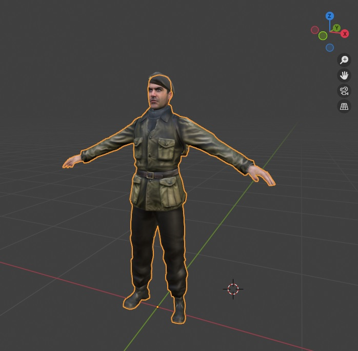
(Optional) Initialize the mesh transforms for a clean start: Ctrl-A > Position, Ctrl-A > Rotation & Scale
Add the armature
Press N key to enable the properties panel in the 3d view right area.
Look for the ARP tab
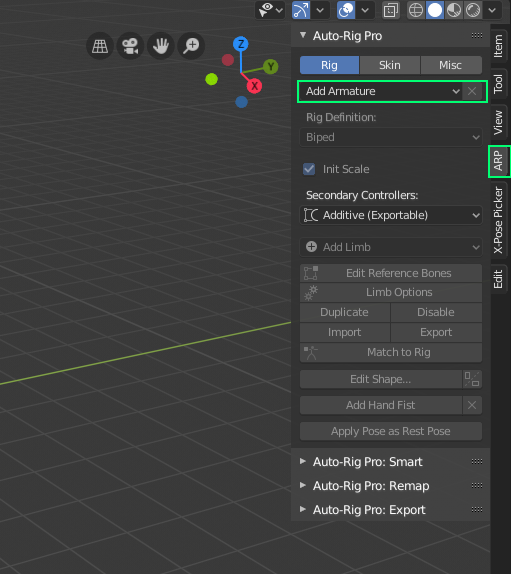
Press the Add Armature button in the Rig tab.
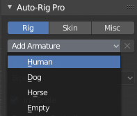
- Choose a rig preset.This part of the documentation covers the Human rig only, but the same principles apply to the other types (Dog, Horse…).The Empty preset is used to build a rig from scratch, it does not contain any limbs by default. Arms, legs, spine… can be added by clicking the Add Limbs button.
Smart
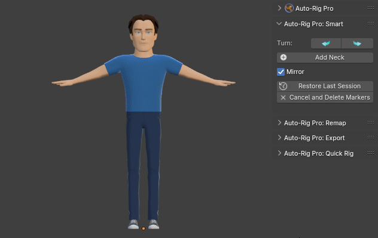
Guidelines:
The character can be in T-Pose or A-Pose
- For best results with fingers detection:
- Keep spaces between fingers, spread fingersPalm must face the floorNot too low-poly
Mac Warning
Warning
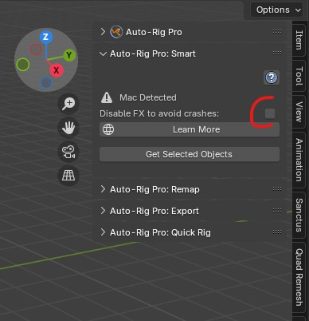
How to use
Facial: if you wish to setup the facial markers (optional), first make sure the eyeballs are a separate object
Show the ARP addon interface: press N key to enable the properties panel in the 3d view right area, look for the ARP tab, then Auto-Rig Pro: Smart menu.
Select all of the body objects. Avoid selecting props, clothes objects if they’re not necessary to define the character body.
Click Get Selected Objects in the Auto-rig Pro : Smart panel
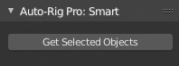
The camera will frame the character in front view.
If the character doesn’t face the camera, you can use the Turn buttons to rotate by 90° steps
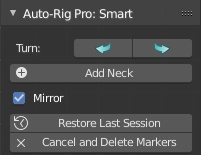
Guess Markers

Without Guess Markers (manual marker placement)
If the character is not symmetrical, uncheck Mirror. If enabled, the left markers/bones are mirrored to the right (right from the character’s perspective, screen-left)
Click the Add Neck button. A new circle shaped marker is added, move the mouse cursor to position it at the root of the neck.
No need to rotate the view while doing this, keeping the front view will be fine. The solver will automatically find the depth
Click the next button Add Chin, position it nearby the chin, and do the same for the other markers
Fingers
Set the number of fingers of the character:
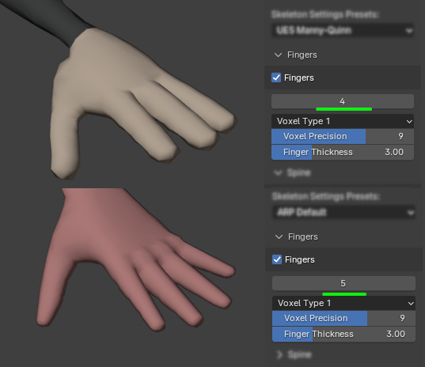
Two engines are available to detect fingers joints:
- AI
- (AI files must be installed, see AI files (Smart tool))It’s a good all-rounder solver. It can solve complex topology cases such as intricated geometry (robots, ball joints…). It may still fail though with complex, weird fingers.Click Guess Fingers to predict the fingers joints and tweak them if necessary.Or, just click the Go! button to start the whole process, including fingers.

- Voxel Centroid
- Works best with slick, simple fingers shapes. But is more fragile and prone to error when something goes wrong during the voxelization process.It is run automatically when clicking the Go! button
Note
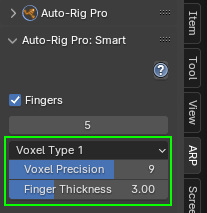
Facial
Optionally, facial markers can be set up, if you wish to rig the face.
Push the Add Facial button
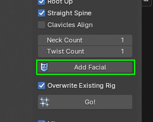
Position the markers vertices to match your character face proportions:

Enter the eyeball object name in the dedicated input field

Other optional teeth and tongue objects can be set to position the bones more accurately, and help automatic skinning later.
Click OK
Click the Go! button
After a few seconds, the references bones should be properly positionned on the model. Note that this may require additional manual tweaking to get a more accurate placement.
Rig Definition
Limbs Setup
It is now time to configure and define the skeleton.
Select the armature object
If you don’t use Auto-rig Pro : Smart, first scale the armature in object mode so that it roughly fits the character height
Show the ARP interface: press N key to display the properties panel at the right of the viewport, look for the ARP tab
Auto Rig Pro > Rig tab > click Edit Reference Bones
Tip
Reference bones can be edited anytime after the rig completion by simply clicking Edit Reference Bones again
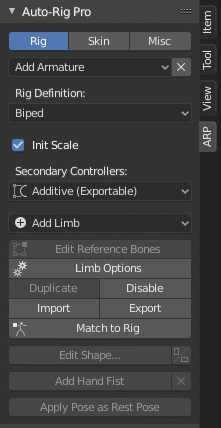
Limbs can be added one by one using the Add Limb button.
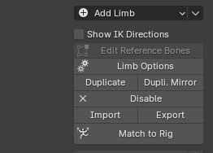
Biped - Multiped
For quadrupedal creatures (dog, cat, horse…) it’s necessary to switch to Multi-Ped type instead of the default Biped. As Biped, the spine controller shapes are oriented vertically. As Multi-Ped, their orientation is free, since a quadruped/multi-ped stands with his “hands” on the ground.
Dog Rig tutorial by CGDive.
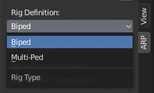
Limb Options
Limbs have various options to fit… various needs! To access options of a limb, select a bone from it and click Limb Options. For example, select an arm bone and click Limb Options to enable or disable the fingers, by ticking/unticking the checkboxes. To disable, add or duplicate a specific limb, see chapter Duplicate - Disable Limbs
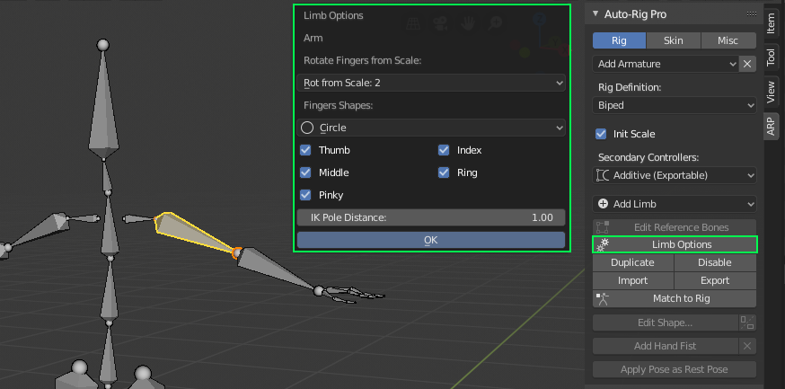
Head Options
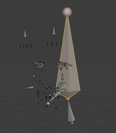
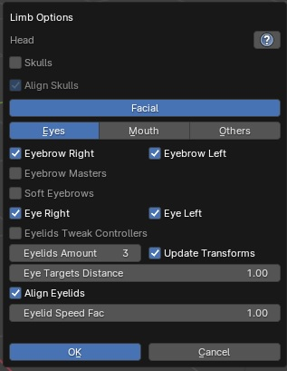
Skulls
Add skulls controllers to manipulate independently:
the lower facial bones mouth, jaw with c_skull_01
the mid facial bones nose, eyes, eyebrows with c_skull_02
the top of the head with c_skull_03
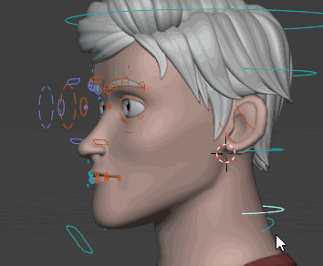
Facial
Global switch to turn on/off all facial controllers.
There are typically two routes to rig facial: bones or shape keys. And for edgy riggers, mixing bones and shape keys is an option too!
- Bones:
- Ideal for high-end rigs and animations, because it allows fine control over the facial expressions, highly customizable.But this is not ideal for game engines because of the numerous bones that will impact realtime performances. When choosing bones, make sure to enable most of the facial controllers/setings below in the facial Limb Options menu.
- Shape Keys:
- Ideal for game engines purposes. This is generally lighter than a full bones facial rig, will comply easily with game engines.Shape keys are sculpted facial expressions that will deform vertices when enabled (e.g. smile, jaw open, blink shape keys…).When choosing shape keys, it is not necessary to enable the facial options below. Shape keys must be created manually, and driven by custom properties (see Shape Keys export).Alternatively, they can be driven by controllers, for example the “open_jaw” shape can be driven by the jaw controller position. In that case, the facial settings/controllers can be enabled, but the facial bones should not deform the mesh -make sure to remove any facial vertex groups, the whole head should be skinned to the head.x bone.
Eyebrows Right, Eyebrows Left
Enable or disable the eyebrow bones
Eyebrow Masters
Add master controllers (yellow boxes in the Gif below) at the root and tip of the eyebrow, to ease eyebrow posing

Soft Eyebrows
Eyebrow bones will move “softly” when moving the main controller (c_eyebrow_full).
The influence is strongest at the root of the eyebrow, and decreases toward the tip. The Linear setting below defines the curvature of the eyebrow line, when moving the main controller. -1 = Very curved, 1 = Straight
The Soft-Rigid setting defines the amount of the soft effect. 0 = totally soft, 1 = hard (same as disabling Soft Eyebrow)
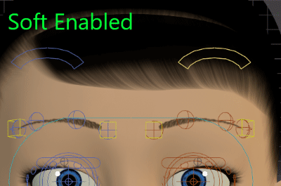
The influence can be tweaked by modifying the custom property eyebrow_soft located on the reference bones. This value will be applied when Match to Rig.
1 = normal, 0 = no influence.
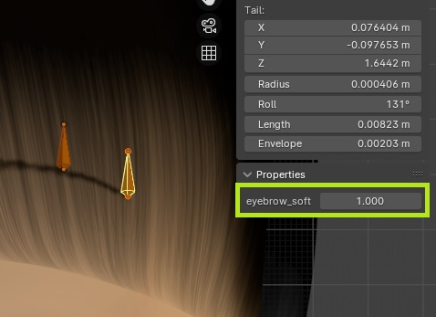
Eyelids Tweak Controllers
Add a controller in the upper and lower eyelids areas, to control the shape/curviness

Eyelids Amount
Number of eyelid bones per upper/lower eyelids.

For full bones facial rigs, a good practice is to create one eyelid bone per vertex. Eyelids should have identical numbers of vertices for the upper and lower eyelids. This brings maximum control over the deformations of the eyelids shapes, when defining the Blink Pose
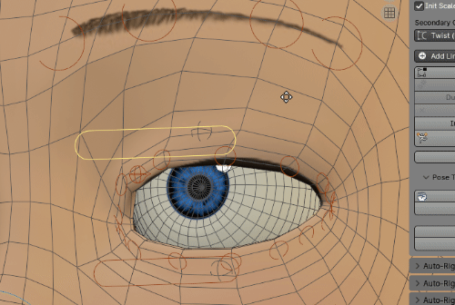
Eyelids Masters Freq
In case of numerous eyelid bones, eyelid masters are useful to drag multiple bones at once. The frequency defining the masters generation is defined by this value.
Below is an example with Eyelids Masters Freq = 2. One master (yellow box) is added every 2 bones, influencing 2 other neighbour eyelids:

Eye Targets Distance
Adjust the eye target controller (“c_eye_target.x”) distance from the head.
Align Eyelids
If on (default), c_eyelid_top/bot controllers are always aligned automatically when “Match to Rig”. If off, only the head of these bones is aligned, the tail remains free. Useful to give custom rotation/scale to eyelid controllers.
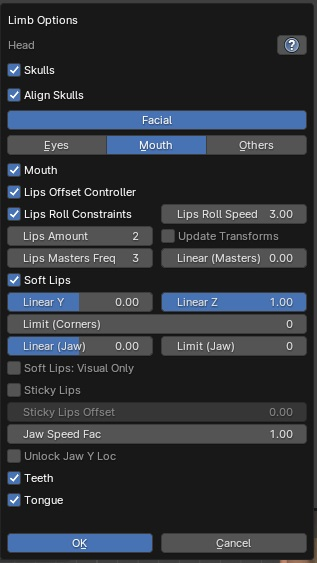
Mouth
Global toggle to enable or disable all mouth features.
Lips Offset Controller
Add a lips offset controller, to move all lips bones at once.

Muzzle Controller
Add a muzzle controller, to move the whole mouth + nose (optional) together. Typically useful for animals. The nose bones remain parented to the head or skull_02 bones, they are dragged with the muzzle controller through constraints.

Lips Roll Constraints
Add lips roll constraints so that lips bones will rotate automatically when moving the c_lips_roll_top/c_lips_roll_bot controllers. The constraints influence will decrease smoothly as the bones are located closer to the mouth corners.
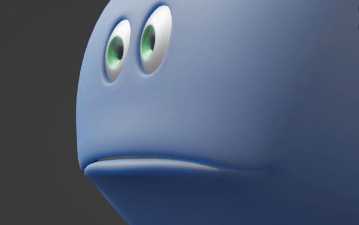
Tip
The roll_speed property located on lips reference bones can be adjusted to fine tweak the roll influence for each lip bone
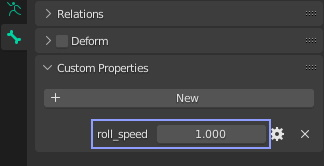
Lips Roll Speed
Global factor to adjust the amount/speed factor of all lips bones when moving the c_lips_roll_top/c_lips_roll_bot controllers.
Lips Amount
Number of lips bones per quadrant, excluding middle and corner bones.
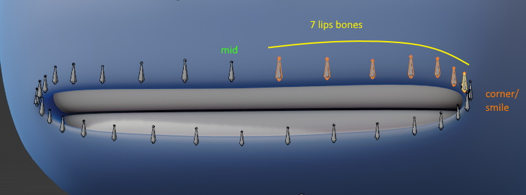
Lips Amount set to 7
When this value is changed, the lips reference bones positions will always be reset, in a grid alignment shape. To force the grid alignment, enable Update Transforms next to it.
Lips Masters Freq
Interval (frequency) between two lips masters. If set to 1, no masters are generated. If set to 2, a lip master will be generated every 2 bones, if set to 3 => every 3 bones, and so on.
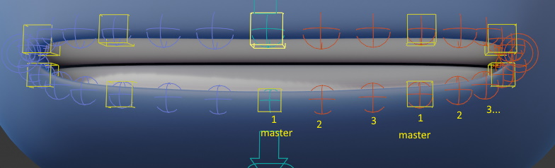
Lips Masters Freq set to 3
The lips masters controllers will softly drag the lips bones around them when they are translated or rotated:
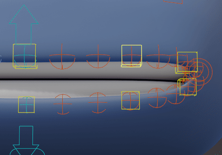
Linear (Masters)
If set to 0, the masters will drag the lips bones with a smooth interpolation. If set to 1, linear interpolation.
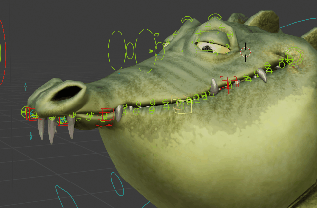
Linear (Masters) set to 0
Linear (Masters) set to 1
Soft Lips
Enable lips elasticity effect for more natural deformations when opening the jaw (c_jawbone) or moving the corner (c_lips_smile)

Linear Y
Adjust the curvature of the lips shape, when moving vertically the corner (c_lips_smile) -1 = Very Curved, 0 = Curved, 1 = Linear/Straight

Linear Z
Adjust the curvature of the lips shape, when moving horizontally the corner (c_lips_smile) -1 = Very Curved, 0 = Curved, 1 = Linear/Straight
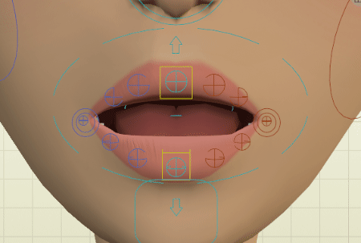
Tip
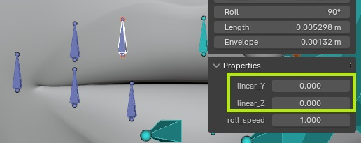
Linear (Jaw)
Limit (Corners/Jaw)
Limit the soft lips effect to a specified range near the mouth corners. 0 = no limits.
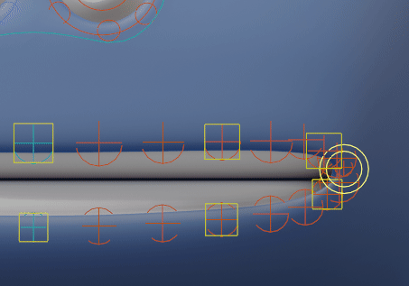
Limit (Corners) set to 3, then 0 (infinite, reaching the middle lips bones)
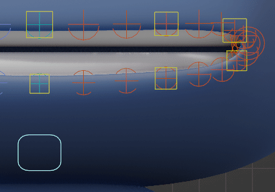
Limit (Jaw) set to 3, then 0 (infinite, reaching the middle lips bones)
Tip
The autolips property located on lips controllers can be adjusted after “Match to Rig”, when posing the character, to increase or decrease the jaw influence when moving the “c_jawbone” controller.
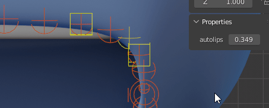
Soft Lips: Visual Only
The soft lips effect will be only visual, it won’t deform except the lips corner. Useful when using shape keys as lips deformations.
Sticky Lips
The lips will remain sealed when the jaw is moving up, acting as if the upper lips are colliding with the lower lips. After Match to Rig, there are additional settings in the Rig Main Properties tab to control the effect, see Lips

Soft Cheeks

cheek_push_ref, located inside the mouth, pointing at the main cheek bone. Can be tweaked to define the direction that the cheek should be pushed toward (+Y axis)
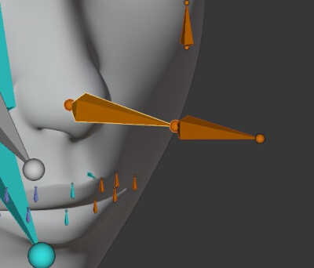
cheek_pole_ref, should be positioned on the skin, in the the middle of the eyes and the ear (cheek bones area) for best results
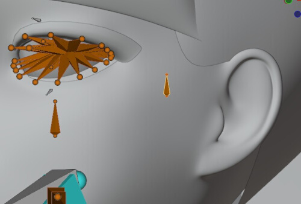
Neck Options
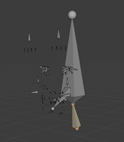
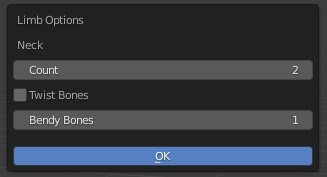
Count
Number of neck bones
Note
To export to Unreal Engine as a humanoid rig:
1 neck bone is required to match the UE4 Mannequin
2 neck bones are required to match the UE5 Mannequin
Twist Bones
Add neck twist bones, for better deformations when the head twists (rotates along the Y axis).
Bendy Bones
Use multiple bendy bones segments to smoothen the neck twist deformation
Important
Warning, Bendy-Bones are unfortunately not export compliant! Should be used for internal Blender projects only.
Spine Options
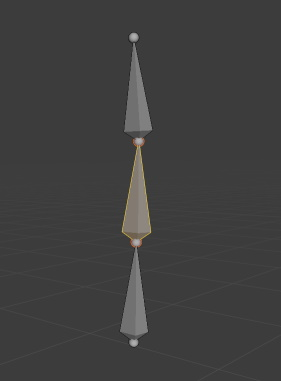
Count
Number of spine bones, from 1 to 64.
Note
To export to Unreal Engine as a humanoid rig:
4 spine bones are required to match the UE4 Mannequin skeleton (1 pelvis + 3 spines)
6 spine bones for UE5 Manny/Quinn skeletons (1 pelvis + 5 spines)
Spine Master Controller
Add a spine master controller to rotate and move all spine bones at once, with optional Stretch and Squash effect.

Space
Local space rotates spine bones from their true pivot when rotating the master controller.
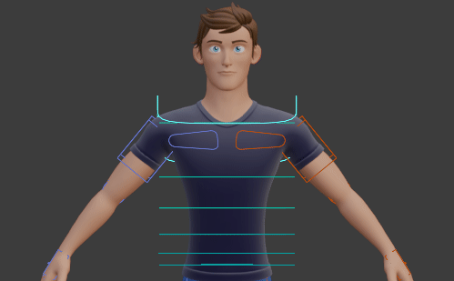
Spine Master space rotates spine bones from the spine master controller, then a translation is applied when rotating.
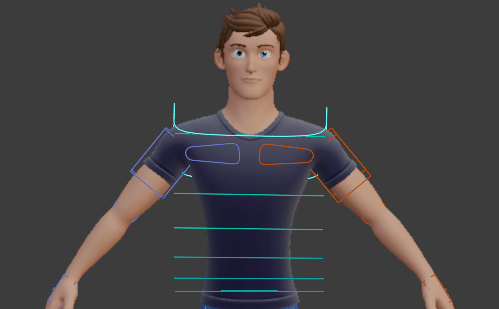
Bottom
Add two bottom (buttock) bones at the left and right sides.
Align Root Master
Align Bend Controllers
Likewise, for c_spine_bend_xx bones.
Reversed Spine
If enabled, a switchable reversed spine chain is added.
The default spine chain hierarchy works in a forward mode: this means that when rotating the first spine, the second spine will rotate too since it is a child of the first spine, and so forth. While the reversed spine chain works the opposite way, the tip of the spine is the root of the chain, and the second to last bone is the child, and so forth.
While it’s not common, the reversed spine can be nonetheless the only way to animate some gymastic motions properly. For example, when the body is hanging from a bar, with the two hands attached to it, the rotation should originate from the chest:

Update Existing Vertex Groups
This allows to automatically rename the vertex groups of all skinned meshes, so that the changes in the spine Limb Options won’t break the previous skinning. If disabled, a manual re-bind may be necessary after changing the options, since the deforming bones names may have changed.
Note
The Spine limb can be replaced with an IK Spline for flexy, stretchy effects. See Spline IK Options
Arm Options
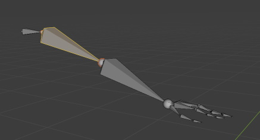
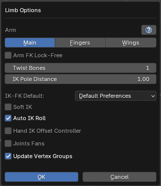
Arm FK Lock-Free
Add an Arm Lock setting to the FK upperarm controller, to switch parent space. See Arm FK Lock
Twist Bones
Number of twist bones.
If the rig is not exported to game engines, 1 is enough since the Blender armature modifier handles dual quaternions skinning (Preserve Volume).
When exporting to game engines, multiple twist bones are recommended for best deformations (3-4 or more) since Preserve Volume is not supported by game engines. Multiple twist bones totally solve the candy paper wrap issue when twisting hands/feet. Above one twist bone, below 4 twist bones in Unreal Engine:
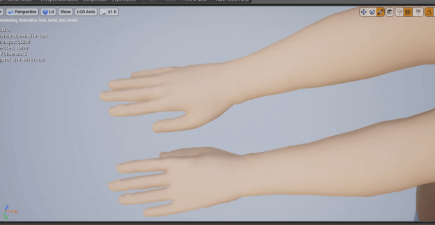
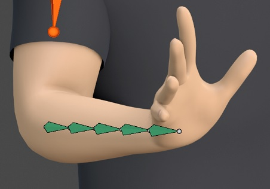
However, 1 twist bone is required to match the Unity’s humanoid rig. Unreal’s humanoid rig support multiple twist bones.
IK Pole Distance
Adjust the IK pole controller default distance from the elbow:
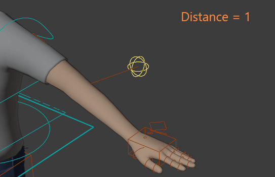
Soft IK
This setting helps to avoid the typical elbow “pop” when the arm is switching from stretched-out to flexed pose.
Note
Do not enable this setting if the rig must be exported later, prone to error. There are unfortunately drawbacks when this setting is enabled: the bones will be slightly stretched by default, Auto-Stretch will always be enabled, and IK-FK snap won’t match accurately
Auto IK Roll
Automatically align IK bones axes for coherent rotation axes and perfectly lined up IK pole. If disable, the IK bones roll can be freely set. It’s recommended to keep it enabled, but in case the model has special arms rotations, it can be useful to disable it.
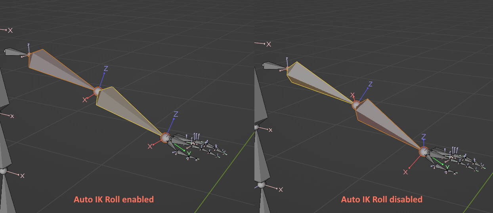
Hand IK Offset Controller
Add another hand IK controller, as a child of the main one:
c_hand_ik
L c_hand_ik_offset
Useful to layer animations/keyframes on two different controllers, e.g: the main controller is used for global positioning, while the offset is used for subtle motions (shaking, fine-tuning…)
Hand IK Pivot Controller
Add a hand pivot controller, to rotate the hand from a custom pivot point, that can be adjusted live when animating.

Rotate Fingers from Scale
Fingers phalanges can rotate when scaling the first one. Set the Rot From Scale property above the fingers checkboxes. Set it to Disable to disable this feature.
Note
Only FK fingers are compliant with this setting, IKs are not

Fingers Shapes
Default shape for the fingers controllers: boxes, circles
Fingers
Add fingers (thumb, index, middle, ring, pinky)
Fingers IK-FK
If Fingers IK-FK is enabled, IK controllers will be added to each fingers, with IK-FK switch and snap settings, and all tools dedicated to manipulate IK fingers.

IK Parent: Parent bone of the IK target controllers
Pole Parent: Parent bone of the IK pole controllers
IK Root Shape: Custom shape used to draw the IK Root target controller, located at the root of the third phalange
Pole Shape: Custom shape used to draw the IK Pole controller, located above the second phalange bone
IK Pole Distance: Distance from the second phalange to the IK pole
For fingers IK to work properly, it’s best to make sure that finger bones (reference bones) are slightly curved upward. Otherwise, the IK direction will be inverted and fingers can fold in the wrong direction:
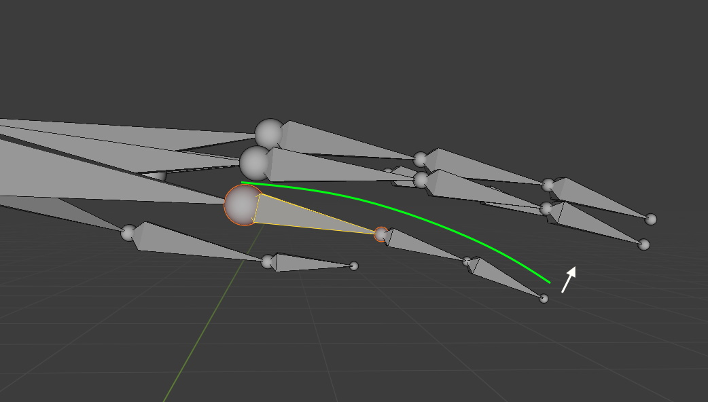
Correct fingers curvature
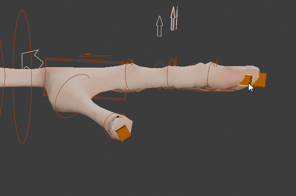
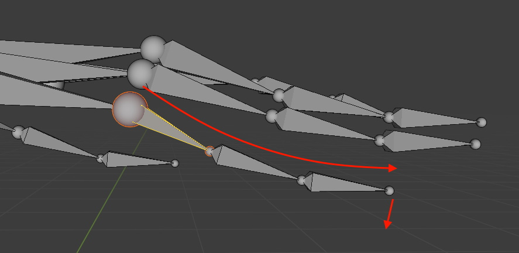
Wrong fingers curvature that leads fingers to fold in the wrong direction
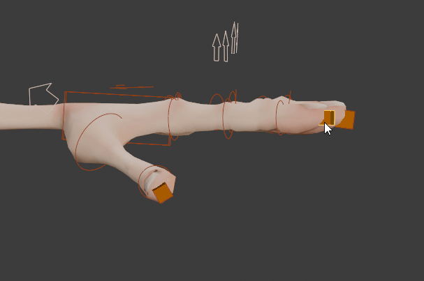
Joints Fans
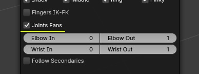
Joints fans are secondary bones, dedicated to hold volume in the elbow and wrist areas. Useful if the Armature modifier “Preserve Volume” setting (dual quaternions) is disabled, or when exporting to game engines that only support linear skinning.
An arbitrary amount of bones can be set between 1 and 32. Useful for accurate control over the deformations in these areas.
Bulge: A bulge effect can be applied to the joints fans, to expand or shrink the deformations as the bone rotates.
If Set is enabled, the bulge constraints values are set automatically when clicking OK. If disabled, the values remain untouched, they can be edited manually freely after Match to Rig.
The bulge effect can be either Location based (translating the bone on its Y axis), or Scale based (stretching the bone on its Y axis).
Wings
Add feathers bones to the arm, forearm and hand bone with various settings.
Here is a wings video tutorial, brought to you by the amazing CGDive: https://youtu.be/phYsIRXrsF0
Arm Feathers: amount of feathers for the arm bone
Forearm Feathers: amount of feathers for the forearm bone
Hand Feathers: amount of feathers for the hand bone
Feather Subdivisions: amount of bones per feathers, to curve its shape (example below with 4 subdivisions)
Feather Layers: Amount of layers/rows of feathers, on top of each other (example below with 3 layers)
Update Existing Feathers Transforms: update existing reference feather bones transforms when clicking the OK button (grid align). If disabled, existing feathers won’t move. Useful to add new feathers while preserving existing ones.
Parent Feathers Layers: parent feathers layers. If disabled, feather layers move independently.
Add Wings Fold Controller: add a controller to fold the arms and feathers by scaling it. Requires an action containing rig_wings_fold in its name, rest pose at frame 0, folded pose at frame
Note
Create a new action named rig_wings_fold
Keyframe arm and feather bones controllers in reset pose (rest pose) at frame 0, folded pose at frame 10
Click Edit Reference Bones
Select an arm bone and click Limb Options
Enable Add Wings Fold Controller
Click OK
Click Match to Rig
Unlink the rig_wings_fold from the rig
Naming: the feather bones are named this way:
bone_type + ‘feather’ + feather number + layer number + subdivision number + side
For example: c_hand_feather_02_03_02.l
Leg Options
Thigh FK Lock-Free
Add a Leg Lock setting to the FK thigh controller, to switch parent space.
See Leg FK Lock
Twist Bones
Number of twist bones.
If the rig is not exported to game engines, 1 is enough since the Blender armature modifier handles dual quaternions skinning (Preserve Volume).
When exporting to game engines, multiple twist bones are recommended for best deformations (3-4 or more) since Preserve Volume is not supported by game engines. Multiple twist bones totally solve the candy paper wrap issue when twisting hands/feet. Above one twist bone, below 4 twist bones in Unreal Engine:
However, 1 twist bone is required to match the Unity’s humanoid rig. Unreal’s humanoid rig support multiple twist bones.
Soft IK
This setting helps to avoid the typical knee “pop” when the leg is switching from stretched-out to flexed pose.
Note
Do not enable this setting if the rig must be exported later, prone to error. There are unfortunately drawbacks when this setting is enabled: the bones will be slightly stretched by default, Auto-Stretch will always be enabled, and IK-FK snap won’t match accurately

Auto IK Roll
Automatically align IK bones axes for coherent rotation axes and perfectly lined up IK pole. If disable, the IK bones roll can be freely set. It’s recommended to keep it enabled, but in case the model has special legs rotations, it can be useful to disable it.
Foot Roll Break
If enabled, the foot will rotate first from the ball pivot when raising the c_foot_roll_cursor, then from the tip toes pivot when reaching a given value. Settings can then be adjusted live when animating, in the Rig Main Properties tab: Foot Roll Break

3 Bones Leg
Add an extra bone at the root of the chain, useful for quadrupedal, digitigrade creatures such as T-Rex, quadrupeds…
Type 1: Comes with an IK rotation controller at the root of the chain (c_thigh_b), and togglable 2-3 bones IK chain, see (Legs 3 Bones)
Type 2: The IK rotation controller is located at the calf joint, and extra stretch controller for the upper thigh. IK Stiffness settings can be defined live when posing the character, to adjust the IK chain response.

Smart IK Pole
Note
The IK pole can also be unlocked when animating, so that it doesn’t follow the foot at all. See Snap Pole Parent (IK only)
Foot IK Offset Controller
Add an extra IK controller for the feet, acting as another layer of control below the main one. Useful to layer animations/keyframes on two different controllers, e.g: the main controller is used for global positioning, while the offset is used for subtle motions (shaking, fine-tuning…)
Foot IK Pivot Controller
Add a foot pivot controller, to rotate the foot from a custom pivot point, that can be adjusted live when animating.
Toes IK-FK
Enables IK-FK chains for toes.
Additional settings to set the IK pole distance from the toes, and IK-FK switch default value. Useful for quadrupedal creatures walking on toes, birds…
For toes IK to work properly, make sure that toes reference bones are slightly curved upward or downward. Perfectly straight chains will prevent IK constraints from working at all. For example, for birds you generally want to curve the toes phalanges downward so that the toes bend properly when raising the foot:
The toes direction can also be inverted on the fly when animating using the Invert IK Dir setting:

Toes (individuals)
Add individual toes bones (thumb, index, middle, ring, pinky)
Toes Metatarsal
Add metatarsal toes bones, that is the root bone before the first toe phalange.
Also adds automatically a pinky_auto bone that rotates all metatarsal along (the same as fingers)
Toes Parent Foot
Parent the metatarsal to the foot instead of the default main toe bone. Useful for quadrupedal creatures walking on toes, birds… Leads to natural toes motion when IK is on, and when raising the IK foot with c_foot_01
Toes Pivot Controller
Add a controller to rotate the whole foot from the toes

IK Pole Distance
Adjust the IK pole controller distance from the knee.
Joints Fans
Joints fans are secondary bones, dedicated to hold volume in the thigh/buttocks and knee areas. Useful if the Armature modifier “Preserve Volume” setting (dual quaternions) is disabled, or when exporting to game engines that only support linear skinning.
An arbitrary amount of bones can be set between 1 and 32. Useful for accurate control over the deformations in these areas.
Bulge: A bulge effect can be applied to the joints fans, to expand or shrink the deformations as the bone rotates.
If Set is enabled, the bulge constraints values are set automatically when clicking OK. If disabled, the values remain untouched, they can be edited manually freely after Match to Rig.
The bulge effect can be either Location based (translating the bone on its Y axis), or Scale based (stretching the bone on its Y axis).

Tail Options
Count
Set the amount of tail bones.
Master Controller at Root
Set the tail master controller, which rotates all tail bones at once, at the root position of the tail.
Ear Options
Count
Set the number of ear bones.
Spline IK Options
IK Spline Count
Number of bones for the IK spline bones chain
Bendy Bones Count
Number of bendy-bones per bone, for a smoother result.
Curve Smoothness
Increase or decrease the extra smoothing of the curve shape. Decreasing it is useful if spline bones have different locations between rest/pose position due to the curve extra smoothing.
Name
Name of the Spline IK chain bones.
Side
Define the side (middle .x, left .l, right .r) of the chain, by renaming bones with the chosen suffix.
IK-FK Chain
Generate an FK chain as well if enabled, with IK-FK switch and snap settings. See Spline IK
Update Vertex Groups
Deform
Enable or disable weight deformation of the Spline IK bones. Disabling it may be useful when creating more bones (by hand) over the existing ones, to set new bones as the deforming ones instead of the base spline IK bones.
Update Transforms
Change the existing spline reference bones position when clicking OK (grid align). Disable it to preserve their position. If the spline count is changed, enabled automatically.
Advanced Mode
The Advanced mode enables more options to fine tweaks the curve shape with master, inter, and individual controllers.
Controllers Frequency
The frequence defining the master controllers spacing along the bones chain. For example, setting to 2 will add a master controller every 2 bones.
Interpolation
Interpolation type for the inter controllers, between two master controllers. Linear produces straight lines, while Smooth leads to curved lines.
c_spline_master parent
Parent bone of the c_spline_master bone. Setting it to None allow free parent, by manually setting it.
c_spline_master tip parent
Parent bone of the last c_spline_master bone at the tip of the chain. By default parented to the tip controller, however it can produces interesting effects for ropes when parenting to the root. If set to None, the parent can be freely changed after “Match to Rig”.
c_spline_tip parent
Parent of the tip controller of the chain c_spline_tip By default parented to the root c_spline_root Setting it to None allow free parent, it can be set manually after Match to Rig
Note
IK Splines are exportable, but bone scale/stretch and bendy-bones are not supported.
IK Spline example to rig a Spine

Important
When enabling IK Spline stretch, the arms and neck will inherit the scale of the latest spline bone, which can be a problem. To fix it, follow these steps:
Add a Copy Scale constraint to all bones parented the latest IK Spline bone, c_traj as target bone, Offset and Additive enabled
Then, set Inherit Scale to None for each of these bones too
To twist the chest when rotating c_spline_tip.x:
The Spline IK must be set as Advanced in Limb Options
Twist setting must be enabled, with c_spline_tip.x as target
Shoulder and neck reference bones must be parented to the spline tip twist bone, e.g. spline_twist_04.x
IK Spline example to rig an IK Neck
It can be convenient to rig creatures that have long necks with an IK spline, instead of the default FK Neck limb. The typical setup would be the following:
Add a Head limb
Add a Spline IK limb
Parent the neck reference bone to the last spline IK deforming bone, for example “spline_04_ref.x” for a Spline IK made of 4 bones.
In “Limb Options”, enable Advanced, Twist, Custom, “c_head.x” as target bone. And IK-FK to generate a switchable IK-FK chain.
After “Match to Rig”, the neck bone should now be parented to the Spline IK, and Spline bones will twist when rotating the head

Bendy-Bones Options
Bendy-Bones chains are useful to rig stretchy components, hair, snakes… Each bone is subdivided into multiple segments, allowing smooth, consistent deformations.
Note
Bendy-bones chains are not exportable to Fbx! May be supported later.
Bendy Bones Count
Amount of bones in the chain
Bendy Bones Segments
Number of bendy-bones segment per bone
Controller Scale
Scale of the controller shapes
Side
Define the side (middle .x, left .l, right .r) of the chain, by renaming bones with the chosen suffix.
Kilt Options
The Kilt limb is designed to rig dresses, skirt, and other kilt-like clothes.
Check out the CGDive Tutorial.
It supports automatic constrained collisions with legs, and master controllers to drag multiple controllers at once, for easy tweaking.
While the constrained collision system will never be as nice as true simulated clothes dynamics, on projects that don’t require high-end clothes it can be really valuable. Since collision are evaluated on a fixed distance along the bone, there may be clipping here and there with legs, that can be fixed by tweaking the controllers.

Note
The Kilt constrained collisions will work best with loose clothing. Tight clothing will be difficult to handle, since collisions are not accurate, leading to clipping when legs are rotating. In that case, consider using an alternative custom rig, or true clothes simulation.
Count (per side)
The number of main kilt bones per left and right sides. The total amount is this value multiplied by 2.
Tip
A good practice is to create one bone per vertex/loop. If the model is high-poly (e.g. 100 vertices per row), using one bone every 2 or 4 vertices can be enough.
Preserve Shape
If enabled, preserves the shape formed by the existing reference bones when the Count or Subdivisions values are changed. Otherwise, bones will be aligned in a standard perfect circle shape.
Before changing the Count
After Count reduction by 2, Preserve Shape enabled. Same thing with less bones.
After Count reduction by 2, Preserve Shape disabled. The bones are positioned differently, they are set in a perfect circular shape instead of preserving the original shape
Master Controllers (columns)
If enabled, add master controllers every Nth bone (frequency setting below). Master controllers are useful to drag multiple bones at once when tweaking the pose.
Master controller (in red) selected and rotated, dragging other bones in the neighbourhood
Master Frequency
Defines the frequency to add master bones. For example, 4 will add a master bone every 4 base bones.
Subdivisions
Number of subdivision per bone.
Subdivisions set to 3, leading to 3 rows of controllers
Subdivide Reference Bones
Whether or not reference bones should be subdivided. If not, the subdivided final rig bones are simply aligned along the head-tail axis of the reference bone (Y axis). If enabled, allow specific alignment, for example useful for curvy surfaces.
Reference bones subdivided, 3 divisions
Master Controllers (row)
If enabled, add master controller for each subdivision/row, as a large circle shape controller.
Name
Nothing too complex here, just the base name that will be included in each bone name.
E.g: If name ‘kilt’, reference bones are named: kilt_05_03_ref.l
Collide with Legs
Allow constrained collision with leg bones. You generally want the deforming bones to be set in the entries below.
Typically, in an Auto-Rig Pro armature:
Leg(left): thigh.l
Leg(right): thigh.r
Interactive Collision Distance
If on, the collision settings are kept interactive when posing the rig, with property -> constraint driven connections.
Since it’s adding more computation in the loop, it is a togglable option. However, it’s not that performance consuming though on modern computers so it can enabled most of the time.
The interactive settings can be found in the Rig Main Properties panel after Match to Rig, when selecting a control bone from the kilt:
Collision Distance
Set a fixed collision distance, when the setting above is disabled.
Collide on Z
Add a constraint on Z axes, generally gives more accurate collisions.
Since it’s adding more computation in the loop, it is a togglable option. However, it’s not that performance consuming though on modern computers.
Shapes
Set the position of the controller shapes at the head, middle or tail of the bone, and set scale values.
Secondary Controllers
There are 3 deformation modes in option for the secondary bones (bones used to curve the arms, legs). To export to game engines, use Twist (best), or Additive mode. If no export is required, Additive will give good results, while Bendy Bones is best for stylized/cartoon characters.
Twist
Twist and secondary controllers are exportable to Fbx, recommended for best export compatibility.
One secondary controller per twist bone, consequently up to 6 per limb.
Bendy-bones control for easy adjustment of the global curve, while using real (twist) bones to deform and keeping it exportable.
Best control over the shapes, each twist bone can be moved and rotated separately.
Additive
Twist and secondary controllers are exportable to Fbx. However, the exported weights may be slightly different since the additive weights are “baked” onto the main weights.
3-4 controllers per limb for precise shapes sculpting.
Additive skinning involves more bones, so more vertex groups.
Bendy Bones
Twist and secondary controllers are not exportable to Fbx. Must be used for internal Blender projects only.
Only 2 controllers per limb but very smooth control. Ideal for cartoon characters.
Easy skinning: only one vertex group per limb, the secondary and twist bones are computed internally by the bendy bones system.
None
No secondary controllers
Important
All changes are applied when clicking Match to Rig. Changing secondary controllers mode after binding requires to re-bind the meshes, otherwise some bone weights will be incorrect.
Positionning the Reference Bones
The reference bones are the guides used to align the final rig bones position and rotations. Whether your character is not supported by the Smart function (not a biped) or if you simply need to edit the reference bones position, here is how to:
Adjust the bones positions so that they fit the character proportions.
Check the full video tutorials brought to you by the amazing CGDive:
Written guidelines for humans below:
The foot_heel and foot_bank bones (the three little bones under the foot) should match the heel back position and the foot width. The foot_heel_ref bone direction is used to align the feet rotation on the final rig, make sure to set it properly.
IK Chains
In option, the IK pole direction can be drawn as a line to visualize its position in the final rig:

Remember to keep a slight angle between the arms/legs bones. It’s very important for the IK chains to work properly. They MUST NEVER be straight, otherwise the IK direction may be inverted.
IK Chains Auto Roll
IK chains roll can’t be manually adjusted by default, it’s calculated when clicking Match to Rig for consistent axes orientation. However the manual mode can be triggered if you prefer to freely set the arms or legs bones roll manually, see Auto IK Roll in the Limb Options
If Auto IK Roll is enabled, changing the bones alignment as shown below will change the roll. Here the arm is shown from the front view, it can be straight from this point of view, but must keep a slight angle backward (check from the top view):
Spine
The root_ref bone tip should be centered at the bellybutton height, spine_01 at the bottom of the chest, spine_02 should reach the neck base.
Facial
The facial bones should be positionned as the following:
The head (origin) of the eyelids and eyes bones should be located at the center of the eyeball while the tail component should reach the eyeglobe/eyelids mesh surface.
The eye_offset_ref bone is used to align the global eyes direction:
The main upper and lower eyelids controllers are defined by the eyelid_top/bot_ref bones:
The smaller individual eyelid controllers are defined by the eyelid_top/bot_01(02, 03…)ref bones and eyelid_corner_01/02:
The amount of these eyelids bones is defined in the Eyelids Amount menu
The lips bones have to be very close to the geometry, positionned all around the lips.
Duplicate - Disable Limbs
{kind=link}
{kind=link}
To duplicate a limb, select one bone from it and click Duplicate.
To remove a limb click Disable.
Only the arms, legs, neck, head, facial, and ears can be duplicated. It may not be possible to duplicate individual bones: for example, the arms duplication will duplicate the arm, forearm, hands and fingers as a whole, the head duplication will duplicate the neck, head and linked facial if any as a whole. The fingers and spine bones cannot be duplicated yet.
Important
If disabling a limb is not precise enough to remove a specific bone, DO NOT DELETE the bone manually. It can break the rig functions when clicking Match to Rig for example. Instead, consider hiding the bone. See Help / FAQ -Is it possible to delete bones?
Parenting Reference Bones
Reference bones can be parented to each others, i.e. shoulder_ref can be parented to spine_02_ref so that the shoulders will be connected to the spine when clicking Match to Rig. However, parenting only works with predefined behaviors, i.e it’s not possible to parent leg_ref to arm_ref, it won’t work.
Only the root bone of a limb can be parented freely
When reference bones are parented to other reference bones, a dedicated scripted function will assign the final bone parent when clicking Match to Rig, using a default mapping.
It’s possible to force a bone parent by parenting a reference bone to a non-reference bone directly: i.e parenting shoulder_ref to the last bone of a 4 bones IK spline: spline_04_ref, will by default parent the shoulder to the tip controller of this IK spline, c_spline_05. To parent it to the previous controller c_spline_04, parent shoulder_ref to c_spline_04 directly.
Adding Custom Bones
Adding your own new bones (custom bones) for props, clothes, hair or anything required is fairly simple and straightforward. The only requirement is to add and link them to the deforming bones or controller bones, not reference bones. Meaning, bones located in the layer 31, or bones visible after clicking Match to Rig. See Armature Collections
Example to add a hat bone:
Click Match to Rig
Switch to Edit Mode (Tab key) and add a bone (Shift-A)
Parent it to the “c_head.x” bone which is the head controller, or “head.x” bone which is the deforming bone.
It won’t interfere with the scripted instructions, unless these new bones have same names as existing ones (for example do not name a new bone “c_root.x” or “c_head.x” or “head.x”, these bones are already part of the base rig).
To export to Fbx, they must be set as custom bones in order to tell the exporter to include them in the exported skeleton, see Custom Bones
Limitations:
New bones must not be inserted between bones of the same limb, for example the following bones hierarchy would break the rig since a custom bone is inserted between spine bones:
root.x
L spine01.x
L mycustom_spine_bone < incorrect!
L spine02.x
L neck...
But this works:
neck.x
L head.x
L hat
Saving Custom Bones
Custom bones can be saved as custom limbs. This is useful in order to store and retrieve easily a pre-made limb anytime later.
For example, if you rig antennas or hair for a character with your own bones mechanics, and need a similar setup for other characters, save these bones as custom limbs and load them into another rig afterwards. All bones data are saved to file, including custom shapes, constraints, drivers, properties…
The files path is defined in the addon preferences.
To save, click the downarrow button next to the Add Limb list:
To load custom limbs, click the Add Limb list and select a limb under the __Custom__ separator:
Generate The Rig
Click Match to Rig to generate the final rig with controllers, and all the mechanic setup.
Going back to edition mode is possible anytime by clicking Edit Reference Bones.
Tip
Check Init Scale to make sure the rig scale value is initialized to 1.0 (recommended)
New Auto-Rig Pro updates may sometimes change the rig, bones constraints behaviour, bones orientations, which may break previously made animations. To correct this, click Legacy and see if any options may help to preserve existing animations.
Rig UI
Once the rig has been generated, it’s time to ensure it looks nice enough! Controllers should be easily selectable with cool shapes, nice colors, a picker panel…
Bone Shapes
You may want to adjust the controllers shapes. Just click the Edit Shape… button and Apply Shape once you’re done. To mirror the shape to the other side, click the little button next to Edit Shape

Picker Panel
Setup
The picker addon must be installed first. See Installing the Add-Ons.
If you haven’t done it already, you might want to split the 3D viewport into two areas, one view to display the character and one view to display the picker panel. How to do this:
Click at the top right corner of the 3d viewport, then hold and drag it onto the left:
In the Misc tab, Add Picker will generate a new picker (there is none by default). It’s also possible to Export or Import a picker layout file.
Then click the Set Picker Cam, in the view where you want to display the bone picker.
Dotted lines may appear and clutter the interface, to remove them just uncheck the Relationship Lines option in the Overlays panel.
You can add a background facial picture by framing your character’s head, and clicking Capture Facial. If you want to replace this openGL screenshot by a real render, just replace the saved image file with your own file.
To change the picker layout, click Edit Layout…. You’re now free to select, move, rotate and scale the picker bone shapes, buttons, text and background picture. Once you’re done, click Apply Layout to complete.

Remove
If the picker panel is not necessary, delete it with the X icon button next to Add Picker.
Customize
To add custom picker bones:
In “Misc” panel, click Edit Layout
In Edit mode (Tab key), select a picker bone
Duplicate it and rename it with the correct name identifier. (e.g “c_spine_03_proxy.x” to -> “c_custombone_proxy.x”)
In pose mode, in the “Proxy Picker” tab of the bone menu, change the “Pick Bone” to your custom bone name
Note: the other settings (normal shape, select shape…) are deprecated in Blender 4 and do not work. If you want to change the picker shape, change the bone custom shape directly.
Click Apply Layout in the “Misc” menu
Tip
This picker system was created 8 years ago, based on the addon “Proxy Picker” by Max Hammond, when there was no decent picker addon for Blender. Although it’s absolutely usable and fine, it’s more of a hack than a real picker solution. I recommend this picker addon that was released since then, if you need more advanced picker stuff.
Color Theme
Colors of left, middle and right bones can be adjusted quickly with the Color Theme. Click Assign to set the colors of all bones from the given sides.
Import/Export Rig Data
Reference bones transforms, limb options, and custom shapes can be exported as a file and imported later.
These features are useful to restore a broken rig: for example, if you accidentally removed some internal bones, drivers or constraints, leading to break the rig. Then, restore the rig by exporting the rig data, delete the current rig, create a new one, and import the rig data.
Only Auto-Rig Pro limbs can be exported/imported. The custom bones can be exported/imported via Saving Custom Bones
Skinning
Binding
Select first the character meshes objects, then the armature while holding the Shift key.
Click the Bind button to bind.
Bind Engines
Heat Maps: Default engine, works best with watertight meshes (closed mesh)
Voxelized: If meshes are not watertight (e.g. multiple layers of clothes, props, complex topology…), consider using this engine. However, this doesn’t always lead to good results: this is not a true voxel skinning implementation, but an approximated method. It’s not as foolproof as the Voxel Heat Diffuse Skinning addon, neither as fast.
Voxel Heat Diffuse Skinning: Extra skinning addon to bind meshes with complex topology. Use pure voxel skinning algorithm.
Tip
Voxel skinning gives best results with multiple layers of clothes/props, however it’s less accurate with small parts (fingers, facial…) than other methods. A good practice is to enable Selected Vertices Only to mix voxels skinning with surface skinning (Heat Maps). For example, use Heat Maps skinning for fingers/facial and Voxelize for the rest of the body.
Bind Settings
Split Parts (Heat Maps): This setting tries to improve heat maps skinning when meshes are separate in multiple pieces (clothes, props…)
Optimize High Res (Heat Maps): Speeds up binding of high poly meshes that contains more faces than the given threshold below, by internally working on lower resolutions.
Type (Voxelized): Voxelization type, switch this setting to another type if it doesn’t lead to good results
Voxel Resolution (Voxelized-Voxel Heat): The higher this value is, the more accurate and longer to perform the voxelization will be. However, the Voxelized engine may sometimes work better with lower resolutions.
Refine Head Weights: Makes head weights more consistent, based on the chin position, preventing the neck weights to blend too far with the head weight. Only when using the Smart feature, when facial is disabled, and for bipeds only. Alternatively if not using the Smart feature, make sure the reference jawbone is properly positionned, and disable facial afterward. As a drawback it may lead to (too) sharp deformations in the neck area, example below without/with:
Smooth Twist Weights: Improve twist bones skinning by applying a gradient decay to weights along the bones chain. Example below without/with:
Improve Hips Weights: Improve hips/pelvis skinning. By default, the thigh weights tend to blend too far in the hips area. This setting prevents that.
Improve Heel Weights: By default the heel area may be slightly deformed by the thigh weights. This setting make sure to solidify it, leading to more consistent weights.
Facial Features: Improve skinning of facial parts by defining objects used for the eyeballs, tongue, and teeth. The eyelid borders can also be defined for more accurate skinning, by selecting vertices around the left eyelid, click Set Left, and same for the right eyelid. Video tutorial.
Selected Bones Only: Only the selected bones will be evaluated when binding. Useful to bind cloth meshes to clothes bones only for example.
Selected Vertices Only: Only the selected vertices will be evaluated when binding. Useful to bind specific parts of a mesh, for example to only bind fingers, select only finger vertices and enable this setting.
Apply Shape Keys: Evaluate the current shape keys deformations when binding. Useful if shape keys are deforming a lot the meshes.
Scale Fix: Enable this setting if meshes are very small (in Blender units space) and binding doesn’t work
When binding, all existing vertex groups are cleared, except the ones used by modifiers (hair, cloth…) or nodes. However, in case some vertex groups that are actually used by other undetected features must be preserved, click their lock icon before binding:
Tip
Binding can take time, especially with high resolution meshes. See the Clothes chapter to skin and attach clothes to the main body mesh easily.
Important
If binding does not work, see the Help / FAQ
Skinning: Weight Painting and Shape Keys
It’s time to carefully paint the weight vertices for each vertex group in the list. The auto-skinning can be considered as a basis, automatic weights are never perfect.
Facial rigging tutorials brought to you by CGDive!
How to paint the weights?
To quickly select the deforming bones and check the associated vertex groups in one click, you can display only the Deform collection (layer 31 in older Blender versions) of the armature, wich includes the deforming bones only:
A quick search in Google (such as “blender weight painting tutorial”) will give you the basis of the Blender’s weight painting tools if you don’t know them, this is something I won’t elaborate more here. Basically, it’s all about browsing the vertex groups list and painting the weights. If you’re new to Blender skinning, you can check these two videos: Rig Tips 1, Rig Tips 2
For a high quality skinning, this process can take some time, do not hesitate to test the skin accuracy by posing the character into several extreme position (arms up, arms down, arms ahead, thighs up…)
Tip
The Mike Rig is a free character rigged with Auto-Rig Pro, it can be used as a reference to understand how the weights must be distributed for each bone. The facial rig is a mix of shape keys and bones.
Here are a few notes about some specific painting regions:
Clothes
If the body is modeled and skinned under the clothes, a good practice is to transfer the weights from the body to the clothes. This way, they will perfectly stick to the body.
Select the clothes objects, then the body (holding Shift, the target first, then the source), press F3 > type “Transfer Mesh Data” > choose “Vertex Groups”. In the tool shelf options (T key, bottom area) choose Nearest Face Interpolated instead of Nearest Vertex, All Layers instead of Active Layer, and you’ll find here more options to fine-tune the transfer.
Eyes
Make sure to assign the correct vertices to these bones:
The big circle (c_eye_offset) is meant to deform both the eyes and eyelids. It simulates the muscles stretch and compression. The eyelids and eyesballs bones have their own vertex groups though (eyelid_bot, eyelid_top, c_eye and other secondaries), so this bone should just influence the external borders, gradually reduce the influence near the eyelids.
The small circle (c_eye) is meant to rotate the eyeball only.
The sphere circle (c_eye_ref) is meant to control the reflexion disk mesh (if any), sometime used to fake the eye reflexion, easily animatable.
Shape Keys
Lips roll: The c_lips_roll_top/bot bones controllers can drive shape keys, in case the Lips Roll Constraints are disabled, or for more accurate deformations.
Note: Shape Keys can replace various skinning deformations, such as smile or eyebrows expressions. Then it’s best to disable skinning deformation for these bones since shape keys will replace it: select bones that should drive shape keys, and uncheck the Deform property in the bone property panel.
The addon includes a tool to quickly create drivers between a shape key and a bone controller:
Select the armature, then in the Shapekeys Driver Tools enter the bone name driving the shape key or select it and click the little picker icon.
Hold Shift key and select the mesh. In the shape key list, select the one to be driven
Back in the Auto-Rig Pro tab, select the transform parameter you want to use to drive (location, rotation, scale and the axis)
Click Create Driver.
If the shape key increases too slowly or too fast while the bone is moving:
Left click on the pink shape key value then multiply ‘var’ by any number using the * (asterisk/star) character, e.g to speed up 60 time faster, write:
The 0, 1 and Reset buttons are optional, you can use them to set a key to 0 or 1 on the curve, according to the current bone position. It’s especially useful when using multiple shape keys, such as the eyelid rotation that may involve several shapes for big eyes.
Note
You can also negate the expression to switch the bone direction: “-var”
To delete a driver:
Right click on the shape key value > Delete driver
Corrective Shape Keys
Sometimes, painting weights is not enough to get correct deformations. For example, rotating the forearm or calf/leg bones at extreme positions often result in poor deformations, with penetrating faces. This is where corrective shape keys shine! They allow to fix deformations by editing the mesh manually for a given rotation. However accessing the bone rotation from the transform values is only possible with FK chains. For IK-FK chains such as the arms and legs, it’s a more complex to setup. This is why Auto-Rig Pro includes a convenient tool to do this in a few clicks:
Pose the arm, leg, hand… or any bone controller in the position that leads to incorrect deformations
Enable the Deform collection (layer 31 in older Blender versions) to show deforming bones, or click Pick Selected Bone(s) that will show an error and display the Deform collection automatically.
Select one or two deforming bones, that are related to the deformation, when they rotate to the current angle.
If 1 bone is selected, must be an arm or leg bone. The other relative bone to calculate the angle from, will be automatically assigned.
If 2 bones are selected, can be any bones. The first selected bone must be the rotated bone. For example, the foot and leg_twist bones must be selected to correct the ankle deformation when the foot rotates. To fix a deformation when the forearm rotates, select a bone from the forearm, and a bone from the upperarm.
Click Pick Selected Bone(s). If the selection is not valid, an error message should pop up
A new bone is created internally, used to define the shape key driver rotation. You can click the eye button to show the bones and angle value (in radians) that will be applied to the driver.
Select the mesh object and the corrective shape key to be applied to this pose (create one if there is none yet).
Click Add Corrective Driver
Done! If necessary, you can use the 0 and 1 button above, to define when the shape key must start and end, as the bone rotates.

You can also use these buttons to create multiple intermediate shape keys that will be triggered one after another as the bone rotates, for more accurate deformations. Just copy the driver (right click on the pink area > Copy) and paste it to another shape key (right click > Paste), and use the 0/1/Reset buttons to define the shape key range.
Tip
Use the Corrective Shape Key addon to easily edit your corrective shape. This allows to create corrective shapes from another object/mesh, while preserving the current mesh deformations (modifiers + shape keys). Powerful, because editing the shape keys directly on the main mesh can lead to “Crazy Space” issues, e.g. vertices moving to the right whereas you move the mouse cursor to the left. It comes by default with Blender, just enable it from the addons list.
Hand Fist

Optionally, a fist controller can be added to hands. This controller is meant to blend the fingers into a predefined fist pose. This allows a better grasp than the default Fingers Grasp property since that simply curls the phalanges along the X axis, wich may be inacurrate.
To create the hand fist:
Select the hand controller
Click Add Fist Pose
Click Apply Default Fist Pose to set automatically the fingers in a fist pose
If the result is fine, click OK. If not, exit the popup window and tweak manually the fingers: rotate/move/scale directly the fingers controllers. Rotate Fingers from Scale should not be used here. Then click Add Fist Pose again and OK to generate the fist controller.

Fingers will curl into the fist pose when scaling the controller negatively.
Optionally, an extended pose -fingers spread out- can be created as well. Same process, but select Extend after clicking Add Hand Fist. Will be applied when scaling positively.
Blink Pose

Optionally, a blink pose can be added. This is useful to blend eyelids into a predefined closed pose. This allows better eyelids contact, shape, in case the default rotation doesn’t fit.
Select the main upper eyelid controller (c_eyelid_top) and click Add Blink Pose
Click Add Default Blink Pose to apply an automatic pose
If the result is fine, click OK to confirm. If not, exit the popup window and tweak the eylid bones manually to improve the blink pose, then click again Add Blink Pose and OK
Now the eyelids controller will blend into this predefined pose when moving c_eyelid_top. The same process can be repeated for the lower eyelids.
Optionally, multiple half-closed poses can be set. Just repeat the process with the eyelids being half-closed at 50% for example, and select As In-Between when prompted

Changing the Rest Pose
Optionally, the rest pose can be changed. For example, when exporting to Unreal Engine, it’s best to set the character in A-Pose.
Set Pose
This function will automatically set the character into a predefined pose.
Apply Pose as Rest Pose
To apply the current pose as the rest pose, the Apply Pose as Rest Pose button must be clicked. Then click Match to Rig to apply the changes to the final rig.
Set Character Name
For consistency and clarity in the final scene, set the character name used for collections and rig objects. To do this, click the button Set Character Name. E.g, naming a character “matt” will rename the collections to “matt_rig”, “matt_cs”…

Optimizing the Rig Performances
Most characters rigged with Auto-Rig Pro, except very high poly ones or with complex modifiers setup, should reach 60 fps in the Blender viewport. They don’t? Here are tips to drastically improve performances, by gaining up to 40 fps depending on the character meshes:
Cleaning Weights
Reducing the number of bones/vertex groups influencing vertices is very efficient to improve performances. 4 bones max is a good ratio to keep in mind. Some superfluous vertex groups with weight values set to 0.01 or below may be assigned to vertices, when transferring weights between meshes or smoothing weights. Blender has a one click tool to clean them up instantly!
Clearing Custom Normals and Auto-Smoothing
Custom normals and polygons auto-smoothing are performance consuming. Unless these features are absolutely necessary, it’s best to remove them from meshes for optimal performances. Imported meshes from external file format often have custom normals.

Run this script to remove these bottlenecks automatically on all meshes:
import bpy
def set_active_object(object_name):
bpy.context.view_layer.objects.active = bpy.data.objects[object_name]
bpy.data.objects[object_name].select_set(state=True)
for obj in bpy.data.objects:
if obj.type != "MESH":
continue
try:
set_active_object(obj.name)
except:
continue
# obj.data.use_auto_smooth = False# only for older Blender versions
try:
bpy.ops.mesh.customdata_mask_clear()
except:
pass
bpy.ops.mesh.customdata_custom_splitnormals_clear()
Normal Maps Shaders
Eevee isn’t optimized by default to display normal maps quickly in the viewport. It results in a noticeable performance drop when rendering shaders on deformed meshes.
Fortunately a providential addon can fix it! It automatically converts normal maps nodes to custom node groups that commonly reach 60 fps. Can be reverted anytime. Tested and approved!
https://github.com/theoldben/BlenderNormalGroups
Playback Options
Playing back animation in all windows (3d viewport, animation editor) is more consuming than a single one. To ensure best results, in the playback options of the timeline window, disabled all but Active Editor Only:
Meshes Hiding
Sometimes we need to hide meshes (clothes, hair) to output different versions of a character in a single file. Hiding skinned meshes with the eye icon in the outliner is wrong: these meshes will be evaluated when playing the animation, even if they’re hidden. To ensure they’re excluded from the skinning evaluation, when playing the animation, hide them from a lower level using the screen icon.
Appending - Linking in a scene
There are two methods to load a rigged character in a final file. Appending will load a static copy of the rigged character in the file, this means if you change the character geometry or armature in the rig file, the changes won’t be applied to the character in the final file. It’s just a copy. On the contrary, Linking will load a dynamic copy of the character (instance). Changes made in the rig file will automatically be applied in the final file, which is very useful!
First make sure your rig file only contains your character rig and meshes objects (no render camera, light….)
Make sure meshes objects are parented to the armature
By default, all rig/character objects are grouped inside the 3 collections “charactername”, “charactername_rig”, “charactername_cs”. Make sure to include any new objects added by you as well inside (new meshes, etc…).
Appending
In a new scene, File > Append > Select the rigged character file > Collections > Select the root character collection > click Append from Library
Linking
There are two ways to link a rig: Library Overrides or Proxies
Use Library Overrides with Blender 3.0 and above (no choices, proxies don’t exist anymore, deprecated!)
For Blender 2.93 and below, Library Overrides are possible, but it’s recommended to use Proxies for stability reasons.
For Proxies Only: First, you may want to hide (in viewport mode) the armature object in the source file, to prevent the rig to be displayed two times once it’s linked (it may lead to overlapping glitches).
In a new scene, File > Link > Select the rigged character file > Collections > Select the root character collection (“soldier” in the image above)
For Proxies Only: If you wish to export later the rig + all skinned meshes, just click the button Link from Library. But in case you need to export the rig + selected meshes only, disable Instance Collections on the right, then click Link from Library. Disabling this setting allows to load individual, selectable instances of the meshes objects.
After linking, all objects are frozen. To unfreeze them, depending if you use Library Overrides or Proxy:
Library Overrides: Click the Object menu > Relations > Make Library Overrides…:
Proxies: press F3 > type “make proxy” and click it > type the rig object name and click it
For Proxies Only: If the rig contains a picker: select the rig collection, and turn the “cam_ui” camera into a proxy: press F3 > type “make proxy” and click it > type “cam_ui” and click it. The newly created proxy camera is named “charactername_rig_proxy”, select it and rename it “cam_ui”, and finally parent it to the proxy armature (in object mode, Ctrl-P > Object (Keep Transforms)). In a new window (3d viewport), select a bone in pose mode and click Set Picker Cam in the Rig Main Properties tab
Compatibility with other Addons
Auto-Rig Pro complies with other rigging related addons such as:
Cascadeur to Game Engines
Transfer your animated characters created in the Cascadeur software to Unreal Engine, Unity and Godot -just a click of the mouse: Cascadeur to Game Engines
X-Muscles System
Muscles simulation addon, raising the bar for realism: X-Muscles System
X-Pose Picker
Bone picker panel addon, to select bones controller from a separate interface: X-Pose Picker
Rig UI
Conclusion
Make sure to check the other documentation chapters on the left, Rig Features, Game Engine Export and other chapters.
Feel free to get in touch for any remarks, if anythying broke with a newest Blender API update or whatever… and happy blending!
Artell